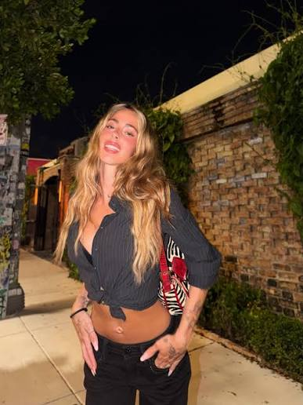
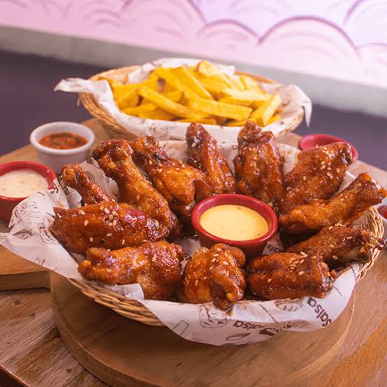
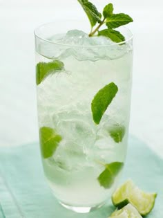
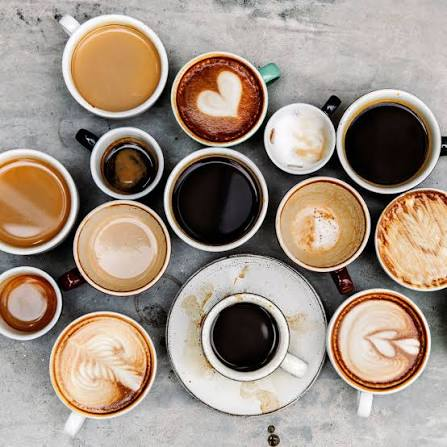
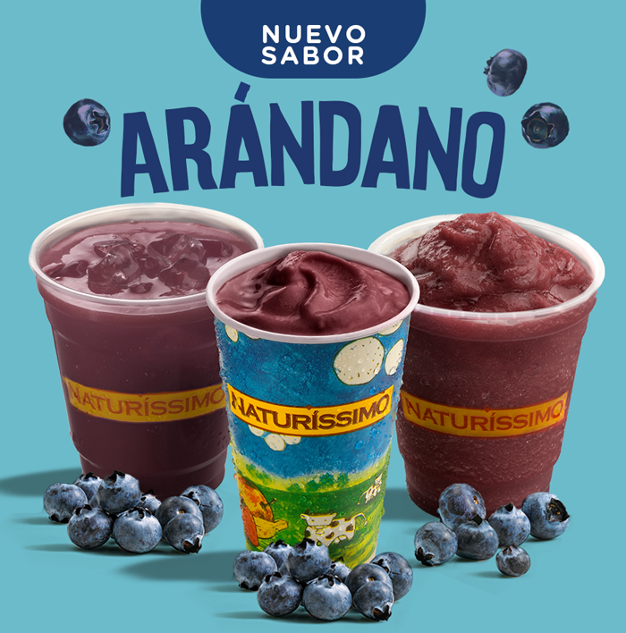
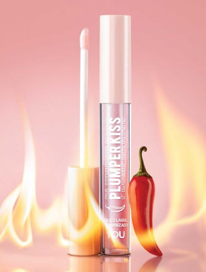
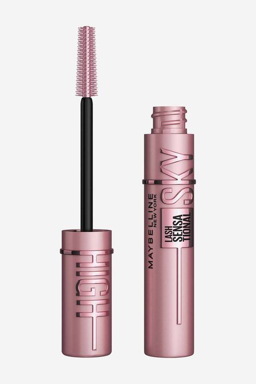
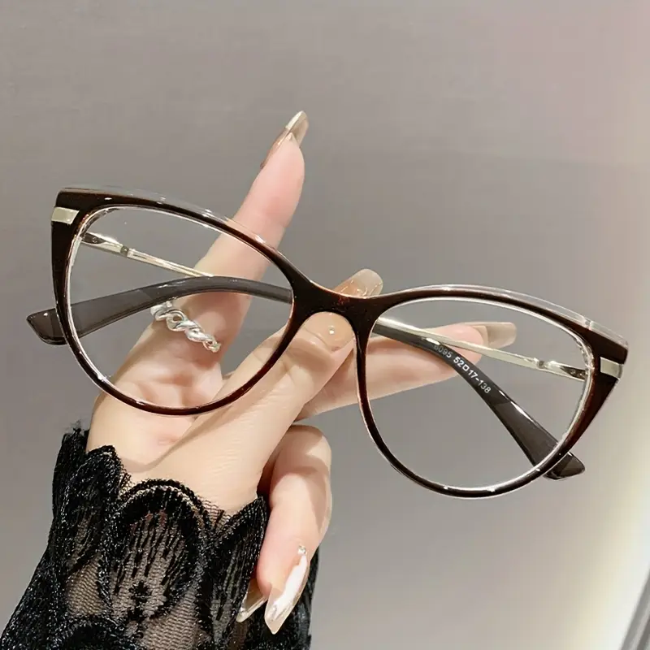
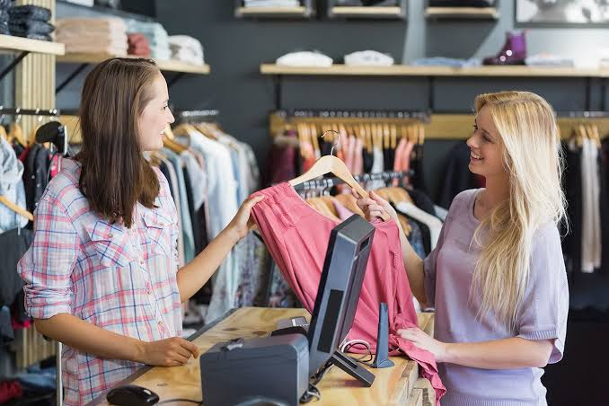
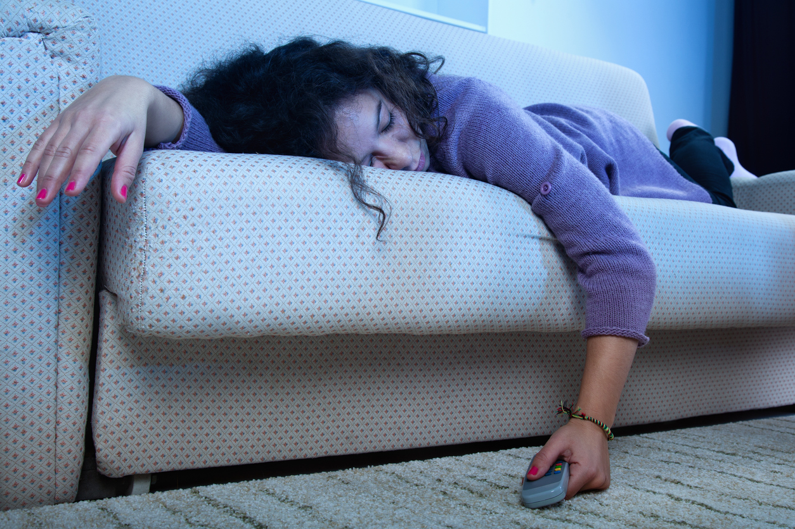

Día 4: El día de los Top 3
¡Llegamos al Día 4! Y hoy la temática es : El día de los Top 3.
Como tienes una personalidad tan marcada y llena de cosas icónicas, no podía elegir solo una categoría. Así que armé varios Tops de cosas que, apenas las veo o las escucho, mi cerebro automáticamente dice "Mabel".
👇 Toca cada categoría para descubrir los ganadores 👇
🎵 Top 3 Artistas
Puesto 3: Taylor Swift.

Puesto 2: Tini tiniiiiiiiiiiiiiiiiiiiiii.

Puesto 1: BTS (los reyes indiscutibles de tu playlist).

🍔 Top 3 Comidas
Puesto 3: Hamburguesas.

Puesto 2: Alitas.

Puesto 1: Sushi.

(Aunque siendo 100% honestos, por encima del top y en un nivel inalcanzable están los patacones y la comida de tu mamá JAJAJA).
🍹 Top 3 Bebidas
Puesto 3: Un buen mojito.

Puesto 2: Café.

Puesto 1: Yogurt de arándanos, tu marido de por vida JAJAJA.

👓 Top 3 Objetos 100% tuyos
Puesto 3: Tus labiales y delineados impecables.

Puesto 2: Tu rímel.

Puesto 1: Tus lentes, no tenia foto de tus lentes

🛋️ Top 3 Actividades de tu día a día
Puesto 3: super vivir la música y el cine.

Puesto 2: Ser explotada laboralmente JAJAJA.

Puesto 1: Quedarte dormida en el sillón y matarte el cuello.

Espero que te hayas reído con estos tops porque son literalmente tu esencia resumida en listas.
¡Vuelve mañana para el día 5! 💜